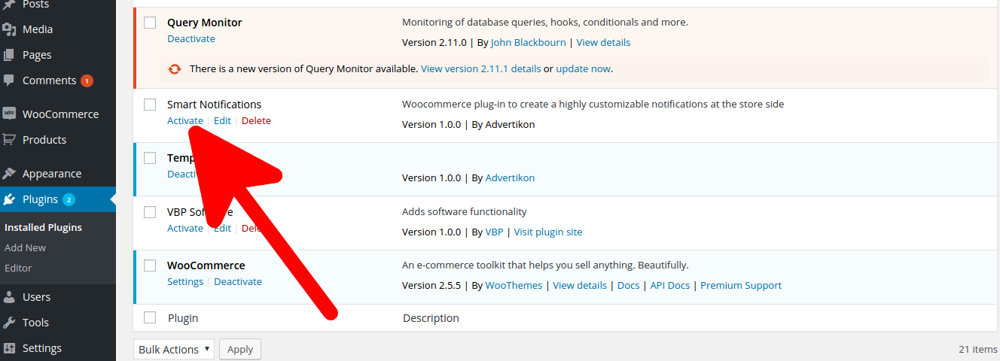
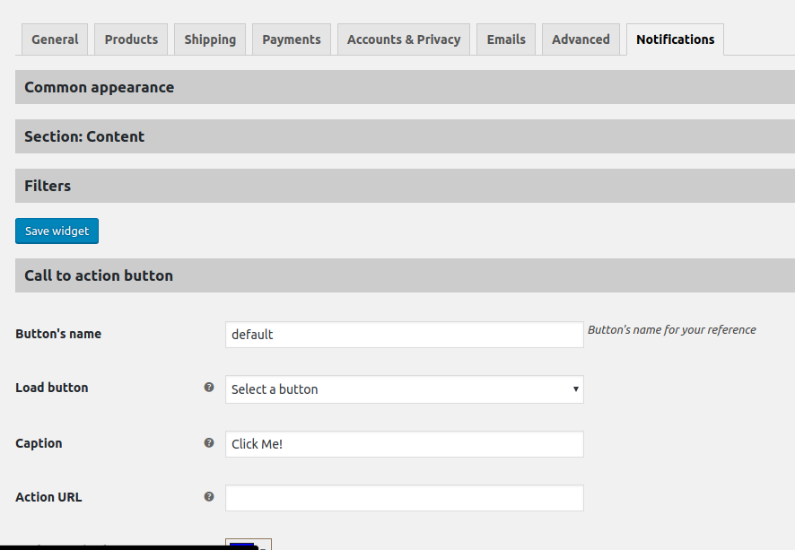
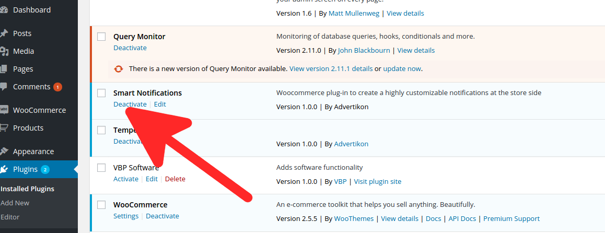

Created: 11/19/2018
By: Advertikon
Email: support@advertikon.com.ua
Thank you for downloading my WooCommerce plugin. If you have any questions that are beyond the scope of this help file, please feel free to email me at support@advertikon.com.ua
Woocommerce plugin to show customizable popup notification for customers
In order to install the plugin unzip package file and upload its contents to yourServerRootFolder/WordPressFolder/wp-content/plugins/ folder.
Such folder structure will be in that case, when WordPress blog is installed in subfolder. In most cases YourStoreRootFolder will be the same as WordPressFolder.
Then go to WordPress Dashboard > Plugins and click plugin's Activate link to activate it.
To configure the plugin go to Dashboard > WooCommerce > Settings > Notifications tab. There are several blocks which groups widget controls (you need to expand block by clicking on its header to get access to controls)
Block Common appearance contains controls to customize appearance of the widget in the whole: width, border color, shadow etc
Block Section contains controls to customize specific section: background color, text position, font size etc. "Text" input field of this block can evaluate shortcoes (it replaces [customer_name] with John Smith, for example)
At block Filters you can configure conditions to show the widget
Block Call to action button contains controls to create or modify existing (you need to load existing button) button. After button is created you can insert it as a shortcode into "Text" field (Block "Section") in a form [adk_button]button name[/adk_button], where "button name" is the name you set for this button. Don't forget to save changes after button modification
In order to save/modify widget you need to click "Save Widget" button
To deactivate plugin go to WordPress Dashboard > Plugins and click plugin's Deactivate link to deactivate it. If you want totally remove plugin - click Delete link. In this case all plugin's data will be removed as well.
